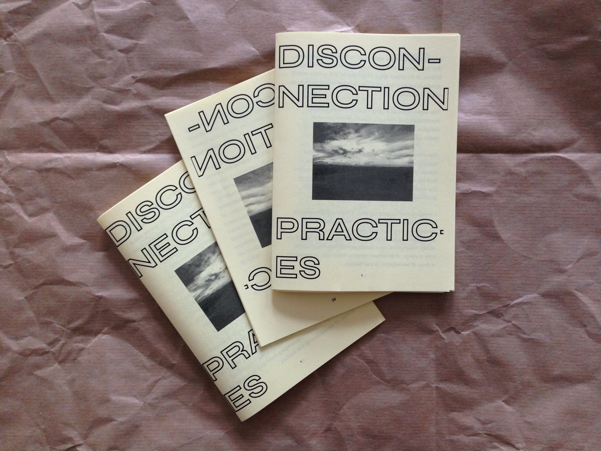
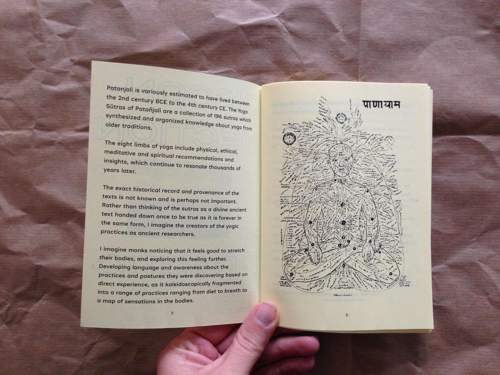

←




→
A zine created as a part of the Disconnection Shop installation by Max Fowler. This zine offers suggestions about how to use your phone less, if you'd like.
A zine created as a part of the Disconnection Shop installation by Max Fowler. This zine offers suggestions about how to use your phone less, if you'd like.